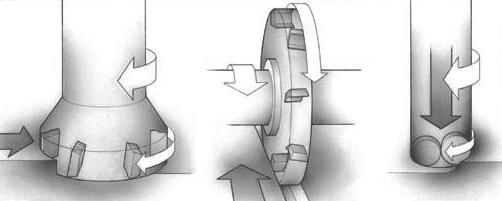

Фреза обычно совершает резание в одном или нескольких направлениях: радиальном, периферийном и осевом. Каждый способ фрезерования можно разложить на эти три основные перемещения в сочетании с вращением фрезы.
При торцевом фрезеровании в работе участвует как периферия, так и торец инструмента. Фреза вращается вокруг вертикальной оси в плоскости, перпендикулярной направлению подачи стола.
Фрезы в основном работают периферийной частью режущих кромок. При этом фреза вращается вокруг оси, параллельной плоскости детали.
При плунжерном фрезеровании в работе участвует торцевая часть режущей кромки или торец концевого инструмента. Подача направлена вдоль оси фрезы, обработка имеет сходство с процессом сверления.
Скорость резания vc, м/мин – это окружная скорость перемещения режущих кромок фрезы. Эта величина определяет эффективность обработки и лежит в рекомендованных для каждого инструментального материала пределах.
Частота вращения шпинделя n, мм/об, равняется числу оборотов фрезы в минуту. Вычисляется в соответствии с рекомендованной для данного типа обработки скоростью резания.
Минутная подача vf, мм/мин, или скорость подачи - это скорость перемещения заготовки и, соответственно, стола станка в минуту. Она равна произведению подачи на оборот и частоты вращения фрезы.
Максимальная толщина стружки hex, мм, является важным ограничительным фактором для инструмента в каждом конкретном случае. Режущая кромка фрезы проектируется для снятия стружки, определенной толщины с начальным, минимальным и максимальным значением.
Подача на зуб fz, мм/зуб, используется для расчета минутной подачи. Это расстояние между траекториями движения двух смежных зубьев, измеренное в направлении подачи. Так как фрезы являются многозубым инструментом необходимо знать толщину срезаемого слоя, приходящуюся на каждый зуб. Подача на зуб рассчитывается исходя из максимально рекомендуемой толщины стружки.
Число зубьев фрезы zn может быть различно и влияет на величину минутной подачи. Выбор числа зубьев определяется обрабатываемым материалом, шириной фрезерования, условиями обработки, мощностью оборудования и требуемым качеством поверхности. Также при выборе числа зубьев необходимо рассчитывать эффективное число зубьев zc, т.е. число зубьев, одновременно находящихся в резании.
Подача на оборот fn, мм/об, зачастую является определяющим ограничивающим параметром в отношении чистовой обработки. Она равна относительному смещению фрезы и заготовки за один оборот фрезы.
Глубина резания ap, мм – это расстояние между обработанной и еще необработанной поверхностями, измеряемое вдоль оси фрезы. Ширина фрезерования ae, мм – это величина срезаемого припуска, измеренная в радиальном направлении или ширина контакта заготовки и инструмента.
Средняя толщина стружки hm необходима для расчета удельной силы резания, которая в свою очередь участвует в расчете потребной мощности. Она рассчитывается в соответствии с рабочим углом охвата фрезы.
Производительность снятия материала Q – это объем удаляемого материала в единицу времени, определяемый глубиной, шириной обработки и величиной подачи.
Время резания Tc или период контакта фрезы и заготовки равен отношению длины обработки (lm) к минутной подаче.
Удельная сила резания kct, величина характеризующая обрабатываемый материал с точки зрения затрат мощности на резание и толщины стружки. А также она определяет степень обрабатываемости материала и возможные режимы резания. Мощность, необходимая для резания Pc, кВт и коэффициент полезного действия h - характеристики станка, позволяющие оценить возможность применения инструмента и выполнения данного типа операции на данном оборудовании.
Основным геометрическим параметром фрез является главный угол в плане kr. Он измеряется между периферийной режущей кромкой и плоскостью торца фрезы и определяет направление сил резания и толщину срезаемой стружки. Выбор геометрии пластин условно упрощен до трех областей, различающихся характером резания: легкая геометрия - L, средняя геометрия - М и тяжелая геометрия - H.
Шаг зубьев u - это расстояние между одинаковыми точками соседних зубьев фрезы. Шаг зубьев фрезы может быть крупным (L), нормальным (M) и мелким (H). Фрезы с различным шагом зубьев предназначены для различных условий обработки, с точки зрения ее стабильности, энергозатрат и наличия склонности к вибрациям.
| Легкая геометрия -L Острая режущая кромка с положительными углами. Стабильный процесс резания. Малые подачи. Низкая потребляемая мощность. Низкие усилия резания. | Средняя геометрия -M Универсальная положительная геометрия. Средние величины подач. | Тяжелая геометрия -H Наибольшая надежность режущей кромки. Большие подачи. |
| Крупный шаг (-L) Уменьшенное количество пластин, переменный шаг, для производительной обработки при недостаточной мощности станка или жесткости системы СПИД. Большие вылеты инструмента. | Нормальный шаг (-M) Универсальны для большинства фрезерных операций. | Мелкий шаг (-H) Максимальное число пластин для высокопроизводительного фрезерования при высокой жесткости системы СПИД. Для фрезерования материалов дающих элементную стружку. Для фрезерования жаропрочных сплавов. |